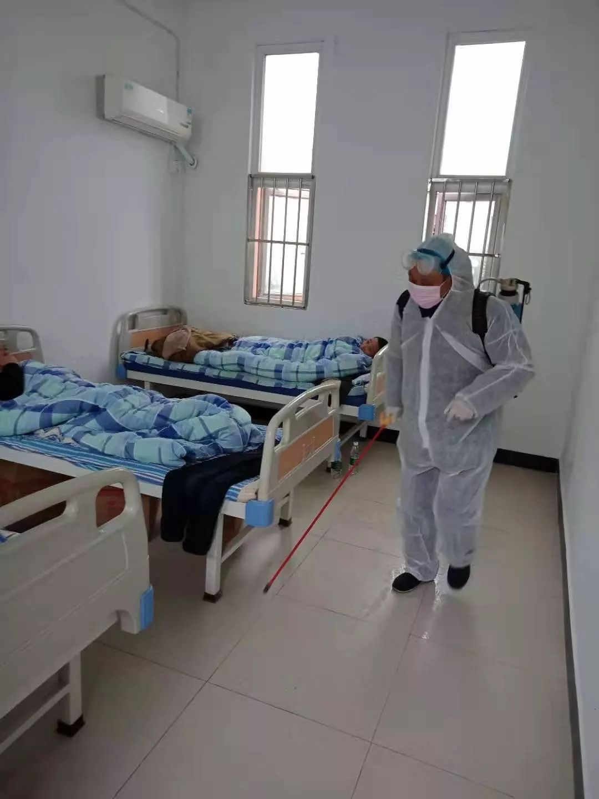

口述实录 | 为什么我要当志愿者接送病人和医生？
原文链接 备份链接 防护和消毒还是很重视的，每送一次，全车消毒一次。 口 述 | 尹 达 整 理 | 黄 祺 我叫尹达，现在是武汉龙安社区的一名志愿者司机。 我的工作是保险销售，疫情发生之前，我一般每天一早去公司，然后出门拜访客户。如果去 …

仙桃救助站工作人员给房间消毒。受访者供图
文 | 周航
编辑 | 陶若谷
细小的角落也在与疫情抗争，城市救助站（全称救助管理站）就是其中之一。这个并不总是引人注目的地方，收留着无家可归者，在城市中起着不可或缺的兜底作用。
突然肆虐的新型冠状病毒拦住了一些人归家的道路。流浪乞讨的生活方式和脏乱差的卫生习惯，让这个群体的感染风险高于常人。而且，他们中有不少罹患精神疾病或有智力障碍，无法自行对抗疫情。生存空间被进一步挤压，依旧敞开大门的救助站成了他们唯一的去处。
这个春节，仙桃市救助站的工作人员林力（化名）和同事取消了休假，每天在一线工作，忙碌于消毒杀菌和紧缺的物资采购。
在这个距离武汉不到100公里的县级市，特殊时期里的无家可归者面临怎样的境遇？工作人员遇到什么新的挑战，又是如何应对的？
以下是林力口述：
我们（救助站）是民政系统下面的事业单位，平时专门救助流浪乞讨人员。疫情突然爆发，我们的任务也紧张了。
大年二十九夜，仙桃“封城”第一天，警察就领来了一个人，巡查时发现的流浪者，一个50多岁的男子。他眼神呆滞，一看就是智力有缺陷，外面套着睡袄，手一直插在兜里，里面直接穿着秋衣，脚上一双布鞋。他随身什么东西都没有，几乎没法沟通。
还有一个精神异常的，也是警察送过来，状况比较稳定，没有明显狂躁，但沟通之后发现有被迫害妄想症。立即送医院有风险，我们就把他安置在隔离间观察。
这时候来人，肯定有风险。如果不收，我们这点地方也没什么问题。但特殊时期，你不收留他们，他们能去哪，吃饭、睡觉地方都没有。
 2018年2月，住在江苏南京地铁里的无家可归者。图文无关
2018年2月，住在江苏南京地铁里的无家可归者。图文无关
以前春节，我们会放假，轮流值班。去年就大年初三收了一个。今年不行，正月初一下午，站里紧急开会，取消休假，全部上岗。现在我们已经收留了9个，除了上面说的那两个，剩下的都是因为“封城”回不去家。
正月初三，一个老先生自己过来求助。河南人，59岁，头发有点花白，样子很朴实，穿得也比较整齐。他身上有一两千块钱，本来打算大年二十九回家，正好赶上“封城”。之前他应该是在（打工的）老板那住了几天，也不是长久之计，人家让他来救助站看看。来的时候挺不安的，问我们收不收，我们当然要收的。
还有个小伙子，17岁4个月大，打工仔模样，穿得挺时尚，外套是韩版那种，提了个拉杆箱，身上一分钱没有。前几天靠工友接济，现在没地方去了，网吧都关了，在街头流荡，警察带来我们这里。
小伙子老家重庆的，大概因为第三方招工虚假宣传，报高工资，报低劳动强度，去了承受不了，干一两个月就走了，试用期没过，工资也拿不到。他话很少，不联系家里，也不给我们联系方式。但是他有身份证，等交通恢复，我们就给他买车票，送他回家。
去年和他情况差不多的，我们就送回（老家）了二十多个。在我们这，吃得说不上多好，但肯定不会饿到。过来先洗澡，他们也很需要这个。衣服也是免费的，冬天发羽绒服，男的黑色，女的红色。
救助站也有规则，我们半封闭化管理，来了后只能在救助站内活动，屋里没插座，随身物品包括手机需要代替保管。可以给家人打电话，有电话也会通知到位。重庆那小伙子这几天估计憋得也难受，但还是挺配合的。
接受救助全凭自愿。这几天也有人过来，我们把规则讲给他听，觉得受不了，直接走了。
我们有辆救助车，每天会跑出去，特别是去涵洞、桥底，但最近这些地方白天都没人了，整个城市都空了。晚上倒是会有一些人流荡，警察碰到，就带到我们这里。公安、城管巡逻发现需要救助的，也有及时救助的责任。
说实话，别的地方像宜昌救助站工作更细，不间断街头巡查，但我们的人员力量偏少，只能24小时值守。
算上护工，我们站一共十多个人。一个在老家回不来，两个被抽调到村里督导疫情防控工作，其他人一律在岗，每晚安排值班。

仙桃市救助站春节值班表。受访者供图
现在市区，每户每两天可以有一个人出门采购。我们上下班，都要有单位出证明，但车开不了，一般机动车都禁行了，只能骑自行车上下班。回家肯定要作个人防护，消毒液稀释后喷洒衣服，袖口、裤腿都喷一遍，脱下外套，晒在阳台通风的地方。
前段时间，有人到救助站，我们都会测体温，看有没有咳嗽，没问题就收留进来。之前还一直用水银温度计。疫情爆发后，有医院送了我们两个新式的温度计，红外感应，头上一照就行。方便是方便，但可能是厂家赠品缘故，质量不怎么样，经常报错，所以只能两者一块用。
这也是我们仅有的健康筛查手段了。要求是救助对象都要先体检，没问题再送进站，但前段时间形势严峻，定点医院也少，没有症状的人医院根本顾不上。现在医疗资源的紧张状况稍有所缓解。
最近来的两个都是乡镇设卡发现的，他们带去医院做检查，拍胸片，没问题送了过来。有一个是从宜昌走了几天，想走回江西老家，说自己又饿又冻。他说起自己经历，我们都很吃惊。
人员进来，我们会单独隔离，三人间只住一个人。我们一共48个床位，正好未成年人的男区和女区都空着，就可以把他们安置起来。工作中尽量还是避免直接接触，吃饭就放在门口，他们吃完把碗筷递出来。
每天，我们都会给工作人员和新收留的人发口罩。一天两个，上午用一个，下午用一个。除了大年二十九夜里警察领来的那个，另外几个人来的时候都戴着口罩，但只有河南的老先生包里还有两个备用的，其他人都没多的。我都不知道，要是不来救助站，他们怎么办。
口罩我们平常也用，之前备了500个，普通的一次性口罩，15块钱一包，一包50个。大年初五又补了1000个，单独包装那种，三块钱一个，用十天半个月没问题。
但消毒用品太紧缺了。我们平常一个月采购一次。最近一次采购是元旦后，20瓶84消毒液，5瓶医用酒精。既然还在收人，消毒工作肯定不能停。如果出现一个病患，我们这可能就要全军覆没了。
早上7点，护理人员上班，给他们房间消杀（消毒杀菌）。以前我们可能一天消杀一次，但现在早上做一遍，下午趁着他们活动做一遍，晚上再做一遍。其他地方，像工作台也要消杀。酒精主要是工作人员出去，回来用喷壶给衣物消毒。

仙桃市救助站工作人员为无家可归者做体温、血压常规检测。受访者供图
疫情来得太突然，不可能有充分准备。1月22日之前，一切工作还是按部就班，23日“封城”开始，我们就到处找消毒用品，全卖完了，没渠道买。
仙桃是医疗物资生产重地，但兄弟单位跑了7家工厂也买不到——产品下线直接拉到武汉和一些大医院，联系好熟人都不能进。
2月2日，消毒液和酒精全用完了，一滴不剩。防护服更是从来没有。接触人员太复杂，像我们接待岗，保安岗，其实也需要这个。我们就自己到处想办法。2月3日，通过私人关系，找到本土超市，说好话，他们让了自用的10小瓶84消毒液给我们。
但再节约使用，也只能五天。好在第二天，有朋友单位有宽裕，又友情转让了一点，20瓶消毒液、100双医用手套、10件防护服，算是缓了口气。
这天市里也在高速公路设置了集中交易点，可以定点购买医疗用品。我们没有酒精，消毒液也不够长时间支撑，防护服太少，本来打算到指挥部去争取采购一批，但说只限于跟生产企业签订合同的单位，没有现货摆摊销售。
后来（民政）局里统一向指挥部争取了一批物资，加上中国社会福利基金会通过省厅也拨了一批，消杀用品的问题算解决了。但防护用品还是急缺。
等交通管制结束，站里可能会安排大家适当轮休。但疫情结束前，除非身体原因需要隔离，我们肯定会全员上岗，继续自己的工作。
我们这还有30个滞留对象。2003年收容遣送制度取消，改成救助制度后，沉淀下来的这些无家可归者，绝大多数都是精神、智力有问题的。这些人常年在外，有些家里甚至以为人不在了，户口都注销了。有的人验DNA，做人像识别都找不到身份信息。
大年二十九来的那个人，我们倒是通过人脸识别找到他老家，是隔壁县的。最近，通过那边救助站，我们知道原来他家人也在找他。但到处都封路了，村和村都不通，上面也下了通知，停止互相之间的接送。就继续安心待在我们这吧。
最早过来的人，现在差不多都过了隔离期，没有异常反应，我们也逐渐放心了。这9个人现在都很好。

仙桃市救助管理站。
后台回复”读者群”, 加入更多讨论
作者简介

*****周航*****
故事是历史的茧。

长按二维码向我转账
受苹果公司新规定影响，微信 iOS 版的赞赏功能被关闭，可通过二维码转账支持公众号。
原文链接 备份链接 防护和消毒还是很重视的，每送一次，全车消毒一次。 口 述 | 尹 达 整 理 | 黄 祺 我叫尹达，现在是武汉龙安社区的一名志愿者司机。 我的工作是保险销售，疫情发生之前，我一般每天一早去公司，然后出门拜访客户。如果去 …
原文链接 备份链接 疫情封锁之下，在一座城市中，人们的境遇也各不相同。市民被分隔成微小的个体，以往芜杂的日常生活具体为物资采购和一日三餐。普通人谨小慎微地关注着体温、情绪和城市的变化，试图平复暴风眼周围一丝丝微弱的气流。 作 …
原文链接 备份链接 关注并星标消费新声 不错过泛消费任何最新动态 就像一张网，“封城”“封路”以及关于抗疫的种种举措，兜起了“人命关天”的大局，而微小个体的遗漏和掉落往往需要相同处境的人去打捞，他们的命运也互为参照。 作者 | …
原文链接 备份链接 最近几天广州的地铁人流量约为单日100万人，发热率为十万分之一点七到三点五。也就是说，每天在地铁内监测到的发热病人在17人到35人之间，情况相对稳定 “如果未来几天，外地返穗人口增加，那发热人员增加的风险肯定会加 …
原文链接 备份链接 武汉城里留守的宠物们，遭遇了一场猝不及防的粮食危机。它们的主人春节返乡前，只留下了足够春节假期吃喝的食水，而由于疫情和封城，宠物主人不能如期返回武汉，这些独居的宠物们，成了另一群等待救援的生命。这几天，真实故事计划和几 …